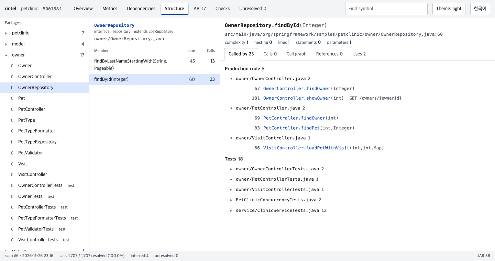

Know what your change touches before you push it.
rintel reads a repository once and answers the questions text search gets wrong: who calls this, what breaks if it changes, which tests cover it, and what is insecure. It runs locally and never executes the code it reads.
go install github.com/spro1/rintel-code/cmd/rintel@latest
cd your-repository
rintel report --open
What you can ask
From the terminal, in CI, or through a coding agent. Every answer is a fact from static analysis unless it is marked as inferred.
| Question | Command |
|---|---|
| Who calls this? | rintel callers UserService.createUser |
| Where is this type or field used? | rintel refs UserDto |
| What does my change affect? Which tests should I run? | rintel impact --base origin/main |
| Which REST endpoints exist, and what handles them? | rintel api |
| Is anything insecure or badly structured? | rintel check |
| Do my dependencies have known vulnerabilities? | rintel check --vulns |
| Where is the complexity? | rintel metrics method --top 20 |
| How do the packages depend on each other? | rintel deps |
Why it is different
Local and inert
Nothing leaves the machine and nothing from the repository runs: no build tool, no annotation processor, no package scripts, and symbolic links are not followed. It is built to be pointed at code you do not trust.
Evidence on every answer
Facts are unmarked. A guess names the rule that made it. What analysis could not see is recorded with a reason, so an empty answer is never mistaken for a blind spot.
Findings come with a fix
22 security and quality rules, each with a CWE id where one applies and a plain statement of what to change.
One index, three ways in
A command line, an MCP server with skills for coding agents, and a self-contained HTML report that opens offline.
A change, explained
One command turns a diff into the code that depends on it, the endpoints that reach it, and the tests to run.
$ rintel impact
Compared with HEAD: 1 files changed, 1 symbols changed, 4 affected, 3 endpoints, 13 tests reach it.
Changed (1)
Owner.addPet(Pet) owner/Owner.java:100
Affected (4)
PetController.initCreationForm(Owner,ModelMap) 1 step(s) away
PetController.processCreationForm(Owner,Pet,...) 1 step(s) away
...
Endpoints (3)
POST /owners/{ownerId}/pets/new
...
Tests that reach the change (13)
OwnerTests.addPetAddsPersistedPet() 1 step(s) away
...For coding agents
A Claude Code plugin adds three skills and an MCP server, so the agent checks the real call graph instead of guessing from grep.
/plugin install rintel --marketplace spro1/rintel-coderintel: who calls this, where is it used, is it safe to delete/rintel:impact: what a change affects and which tests to run/rintel:security: a security review that checks each finding against the code- Any MCP client can use the server:
rintel mcp
Guides
- Getting started: install, first scan, first answers
- Review a change: impact, tests to run, safe deletion
- Use it in CI: a quality and security gate, SARIF
- Use it from Claude Code: the plugin, skills and MCP server
Languages
Java (Spring, Lombok), Go, TypeScript and JavaScript (React, Vue), and Python. Each is resolved with its own toolchain: a JDK, the Go toolchain, Node.js with a bundled TypeScript compiler, and python3.